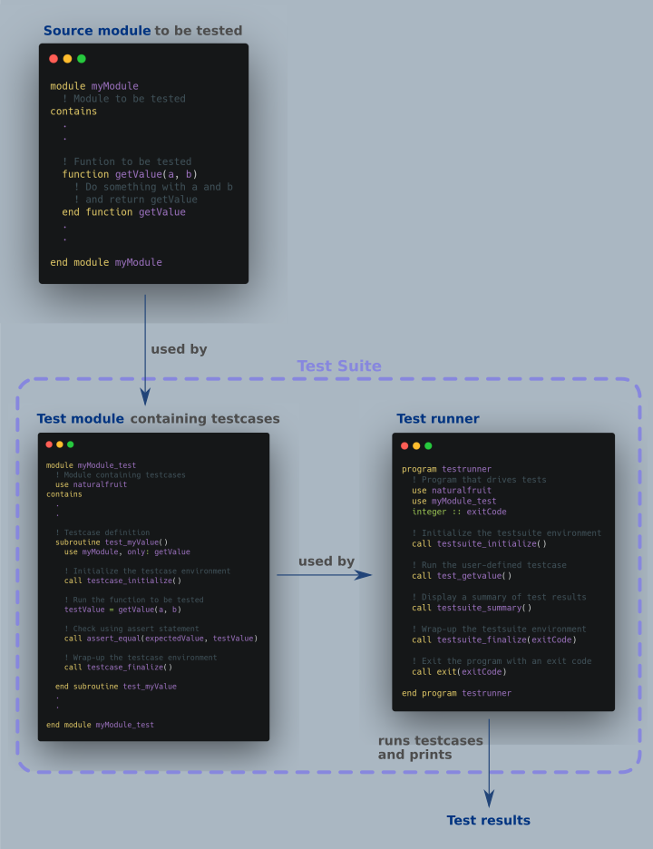

If you are already familiar with the basic concepts of testing, you might want to skip to the list of
1. Assert methods or
2. Procedures
naturalFRUIT is a unit testing framework for Fortran programs adapted from Fortran Unit Test Framework (FRUIT) with a goal to be independant of other programming languages. Due to the lack of reflection and exception handling in Fortran, unit test frameworks tend to rely on other languages like Ruby to ensure flexibility and elegance. naturalFRUIT compromises this elegance for ease of use, quick set-up and learning without losing flexibility. naturalFRUIT was built with users of JUnit and python's unittest packages in mind. Similar concepts are used in naturalFRUIT too:
assert statements The assert statement is the fundamental building block for unit testing in naturalFRUIT. Everything else is just decoration. The assert statement acccepts two arguments- an expected value and a test value. Once the test value is obtained from the function being tested, the assert statement compares it against the expected value. If they match, the assert is a succes, implying the function works as expected. If not, the assert is deemed a failure and the test function is assumed to not work as expected.
test case A test case is the individual unit of testing. It checks for a specific response to a particular set of inputs by using one or more assert statements. Success of all asserts inside a test case implies the test case is successful. Typically, each subroutine/function in a module is tested using a dedicated test case.
test suite A test suite is a collection of test cases, test suites, or both. It is used to aggregate tests that should be executed together. In naturalFRUIT, the test cases contained in a test suite are defined together as subroutines of a module.
test fixture A test fixture represents the preparation needed to perform one or more tests, and any associated cleanup actions. This may involve, for example, allocating variables, creating temporary directories or initializing data sets for testing.
test runner A test runner is the component which orchestrates the execution of tests and provides the outcome to the user. For naturalFRUIT, a separate Fortran program performs the duties of a test runner. This test runner program invokes testcases from the test suite module.
The following image illustrates the typical workflow and basic subroutines for unit testing using naturalFRUIT: 
Documentation, tutorials and source code are under active development. Use cautiously.